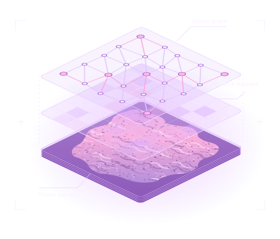

Internal source-slide groups
At the frozen decision threshold of 0.628536, the ensemble detected 37 of 48 positive groups. The AUROC summarizes ranking across thresholds, while sensitivity measures detection at this operating point.
Mathematics and Computational Science
A Four-Expert Computational Framework for Breast Cancer Lymph-Node Metastasis Detection Using Patch-Based Deep Learning, Spatial Graph Analysis, and Calibrated Logistic Stacking

Internal exploratory evaluation · 128 sampled source-slide groups
Study guide
STEGASUS is a four-expert computational framework combining patch-based deep learning, spatial graph analysis, and calibrated logistic stacking to investigate breast cancer lymph-node metastasis detection in digital histopathology.
Research context
Pathologists examine lymph-node tissue for metastatic deposits. Whole-slide imaging preserves a large field of tissue at high resolution. A small focus of disease may occupy only a few patches in this field.
Patch classifiers score local appearance. The STEGASUS study investigated whether the spatial relationships between patches could contribute information about the source slide and whether combining four expert scores improved probability estimates.
Study design
Three image experts score local tissue appearance. A fourth expert processes the relationships between sampled tissue patches.
Train image and graph experts, fit the stacker, freeze the operating threshold, and evaluate sampled source-slide groups.
Apply the fixed pipeline to 20 selected whole-slide images and record scores, classifications, and patch-score heatmaps.
Present recorded evidence through the research website and route compatible inputs to the authorized local analysis host.
Experimental evidence
Explore four views of the study. Each view pairs the recorded evidence with its meaning; the full manuscript records remain available below.
At the frozen decision threshold of 0.628536, the ensemble detected 37 of 48 positive groups. The AUROC summarizes ranking across thresholds, while sensitivity measures detection at this operating point.
The Spatial Graph Expert reached 96.09% accuracy and 0.9992 AUROC. Stacking yielded lower Brier score and log loss than individual experts and simple averaging. Gains in sensitivity, F1-score, and discrimination varied by comparison.
On 20 selected slides, the frozen pipeline detected six of ten positive slides. This exploratory cohort included previously inspected material. Independent external validation remains outstanding.
CLAM, DTFD-MIL, and CAMIL were evaluated alongside the Spatial Graph Expert and STEGASUS. DTFD-MIL showed greater stability across training seeds, while CAMIL varied more. The comparisons did not establish a primary average-precision advantage for STEGASUS.
Browse the reported experimental records and supporting figures from the November 2026 manuscript.
Secondary analyses
The ensemble detected 17 of 27 positive internal groups with micrometastases.
The same operating point detected 20 of 21 positive internal groups with macrometastases.
The supplementary evaluation covered 85,054 patches from 10 slides and nine patients. The slides appeared in the prior project inventory.
Stacking achieved a Brier score of 0.0565 and log loss of 0.2072 on internal source-slide groups. Both metrics assess predicted probabilities against observed labels.
Matched spatial-versus-self-only and leave-one-expert-out comparisons examine how architecture changes affected the recorded predictions. Point estimates describe this sample. Paired statistical results determine which differences the study could establish.
Scope of evidence
Interpretation
The four-expert system ranked sampled source-slide groups effectively and improved probability error in the recorded comparison. Sensitivity fell for smaller deposits and in the selected whole-slide cohort.
Future evaluation should use a genuinely unseen, patient-disjoint cohort, examine sensitivity by lesion size, and verify the application from upload through reporting. Localization and clinical usefulness each require separate validation.
From study to exploration
Submit an authorized slide, follow processing progress, and review the report and patch-score heatmap when analysis completes.